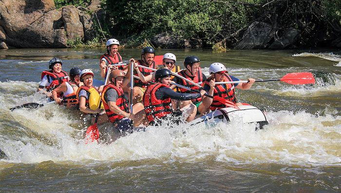
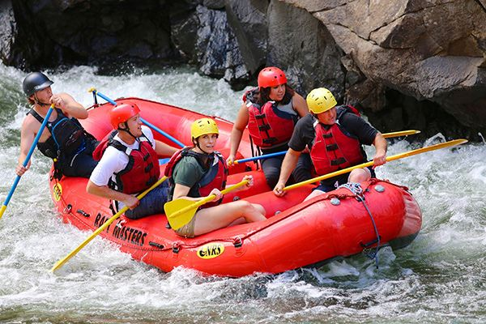
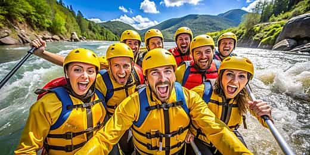

At White Water Rafting Adventures, our mission is to bring people closer to nature while creating unforgettable moments on the river. We believe in adventure, teamwork, and the joy that comes from conquering the rapids together. Safety and fun are our top priorities, ensuring every guest feels confident and inspired on their journey.


White Water Rafting Adventures
History
Founded in 2001 by a group of outdoor enthusiasts, White Water Rafting Adventures began with a single raft and a big dream. Over the years, we have grown into one of the most trusted rafting outfitters in the region, guiding thousands of adventurers down scenic rivers. Our passion for exploration and dedication to our guests have shaped our story into one of trust, excitement, and lasting memories.
